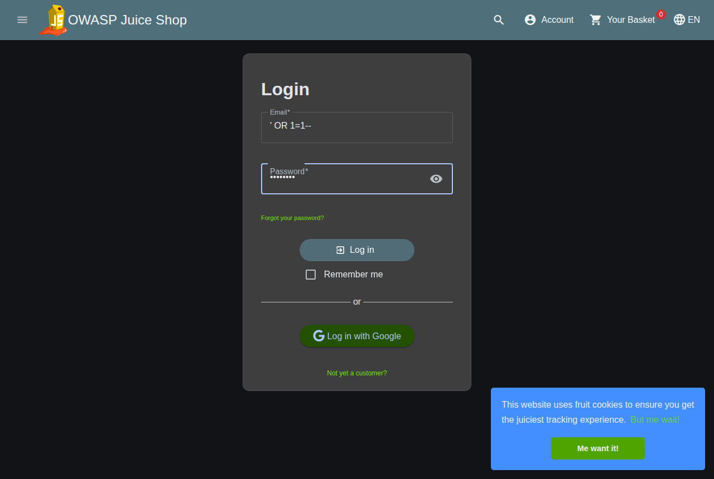
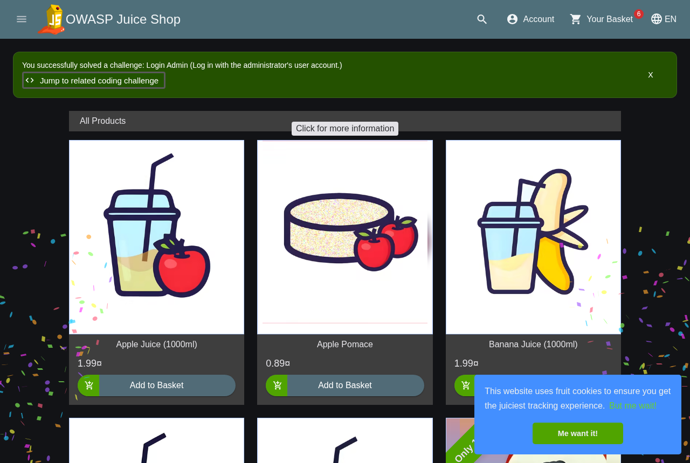
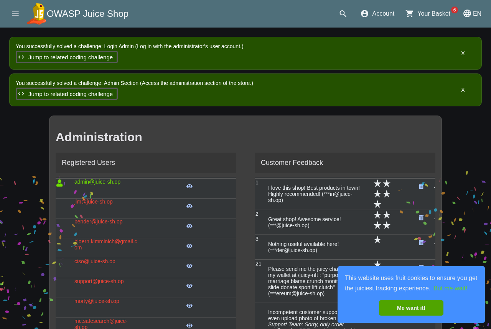

The bug
POST /rest/user/login builds its lookup from the email
field without sanitizing it. Send ' OR 1=1-- as the email with any
password, and the WHERE clause always evaluates true, so the query
returns the first row in the Users table instead of a row matched by
real credentials. Juice Shop treats that as a successful login and hands back a
validly signed JWT for whichever account that first row is. On every fresh
instance of this container, that's the built-in admin,
admin@juice-sh.op, so a single login request with no real
credentials hands you an admin session.
Proof, in the real app
Every curl request below is also just a browser form submission. Here it is done directly through Juice Shop's own login page, no tooling beyond the browser.

' OR 1=1-- as the email, any string as the password.Submitting that form logs the session in. Juice Shop's own built-in challenge tracker confirms it: this is a documented challenge, and the app agrees it was just solved by an unauthenticated request.

To check this was a real, usable session and not a cosmetic "logged in" state, I navigated straight to the admin-only Administration route with no further credentials.

Raw request and response
Same thing from the command line, for a copy-pasteable repro:
POST /rest/user/login HTTP/1.1
Content-Type: application/json
{"email":"' OR 1=1--","password":"anything"}
HTTP/1.1 200 OK
{"authentication":{"token":"eyJ0eXAiOiJKV1QiLCJhbGciOiJSUzI1NiJ9...<truncated>",
"bid":1,"umail":"admin@juice-sh.op"}}Decoded token: role: admin · email: admin@juice-sh.op · id: 1.
Negative control, same container, immediately after: real email, wrong password, no injection syntax:
POST /rest/user/login HTTP/1.1
Content-Type: application/json
{"email":"admin@juice-sh.op","password":"wrongpassword"}
HTTP/1.1 401 Unauthorized
Invalid email or password.That isolates the bypass to the payload, not a broken login flow. I reproduced the exploit twice, each time from a container removed and restarted from scratch, not replayed from a saved session.
To confirm the token itself was real and not just the UI's opinion of it, I used
it against two endpoints that otherwise reject requests outright. It read all 23
seeded user records (emails, roles, password hashes) via the API directly, and
it changed a product's price via PUT /api/Products/1, a read and a
write, both from a token that cost nothing to get.
Severity: Critical, CVSS 3.1 9.1
CVSS:3.1/AV:N/AC:L/PR:N/UI:N/S:U/C:H/I:H/A:NIt's reachable over the plain network with nothing but curl (AV:N, AC:L), so there's no setup cost and no race condition to pull off. The attacker doesn't need an account or any help from a victim (PR:N, UI:N), it's a pre-auth bug by definition. The token you get back reads the full user table and writes to product data (C:H, I:H), which I verified rather than assumed. I didn't test availability (A:N), and everything stayed inside Juice Shop's own data; I didn't chain this into anything outside the app itself (S:U).
This is the same severity band as any other SQLi-to-full-auth-bypass bug (CWE-89 / CWE-287). It's not degrading the login, it's skipping it entirely.
Impact
Knowing a login form exists is enough. From there, an attacker gets a fully valid admin session, read access to every user record including password hashes, and write access to product data. Depending on what else a given deployment gates behind the admin role, that's a plausible path to full control of the storefront.
Fix
- Parameterize the login query (or use the ORM's safe query builder) instead of
building SQL from the raw
emailstring. This alone closes the hole. - Validate and reject SQL metacharacters in the
emailfield before it reaches the query layer, as defense in depth. - Don't trust the JWT's
roleclaim alone for sensitive actions; a second check at the point of use limits what a bypassed session can still do. - Alert on login attempts containing SQL metacharacters as a detective control.
What else I tried
I also found broken access control on the basket and user-profile endpoints: one user's token could read, and even delete, items from another user's basket just by changing the numeric ID in the URL, no ownership check at all. That one's real too, but it needs two accounts to show off, and this SQLi bug gets you full admin with zero accounts, so it's the better write-up.
I poked at order-ID enumeration as well. No luck there, Juice Shop uses non-sequential UUIDs for order IDs in this version, so there's nothing to guess.